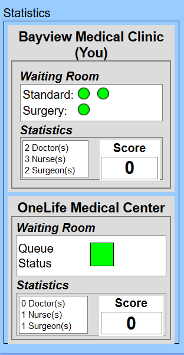

Training
Objective: You are the Bayview Medical Clinic manager who must schedule patients and hospital staff to treat as many patients as possible.
How to Play: There are 2 types of patients: A: Standard B: Surgery The standard patient requires a doctor and a nurse in order to start recovery and the surgery patients require a surgeon and a nurse to begin recovering. As soon as a patient is assigned to a room and has both resources also assigned, a timer will begin to count down to their recovery. You also have help! The neighboring medical clinic OneLife Medical Center is willing to share staff with you. Both you and the Center can share send and receive resources to help save the greatest numnber of patients.

Interface: There are four main parts to the interface: Your panel, OneLife Medical's panel, rooms, and controls. To treat patients you need to assign them to a room with the correct hospital staff. You have 6 rooms. Once a patient or staff is assigned to a room they cannot be unassigned. Within the waiting room, each circle represents a patient. The color of the circles reflects the number of patients waiting: Green: 1-2 Yellow: 2-4 Red: 5-6 The maximum capacity is 6. Once the waiting room is full, no new patients can enter the waiting room. Your available staff will be displayed in the Bayview Medical panel. You can see OneLife's available staff and queu color as well. For each patient treated in EITHER hospital increases the score by 1.  After completing patient and staff assignment, treatment will begin. When it completes after 60 seconds, you can collect your resources by clicking the room before you can use them again.
Trail run: You will play two runs. The first will begin when you go to the next page by clicking the button at the bottom of the screen. This first run will be for practice and allow you to get used to the controls. This will last 2 minutes and then you will begin the full trial. The full trial will be 8 minutes and a final score will be shown at the end. Please contact the proctor if you have any further questions.